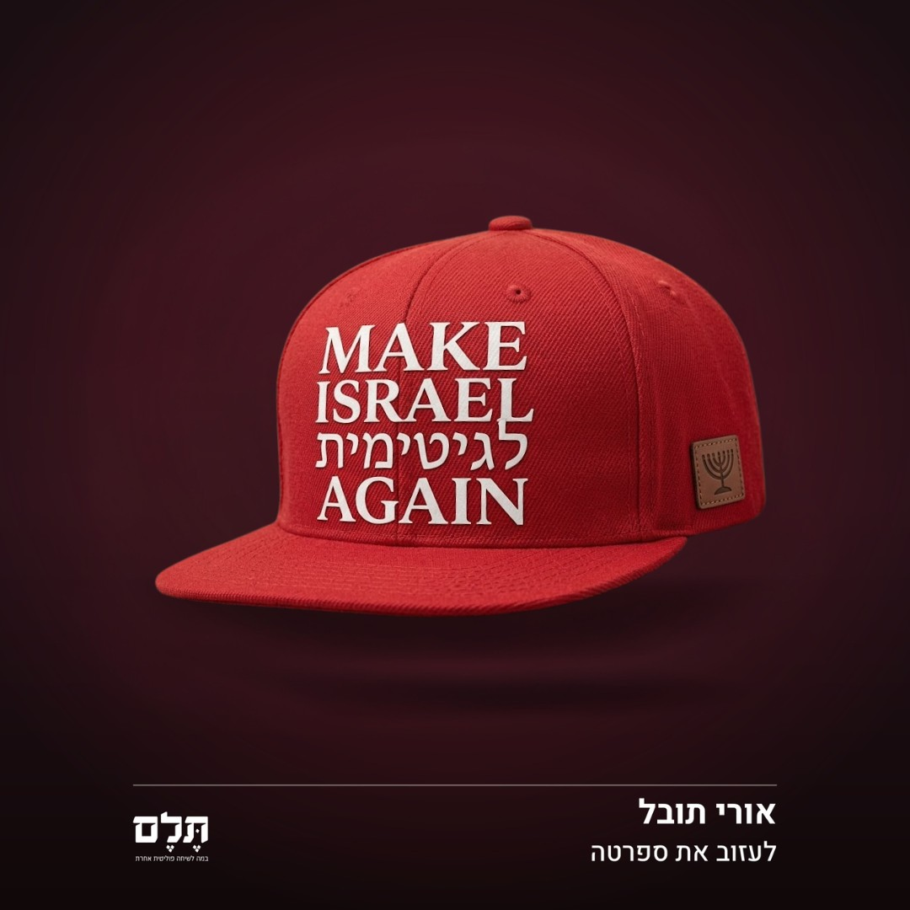
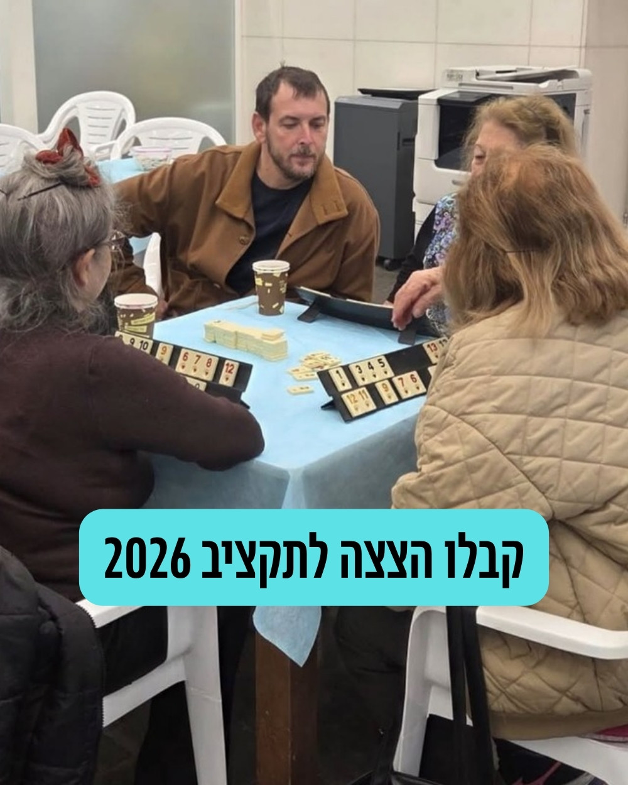
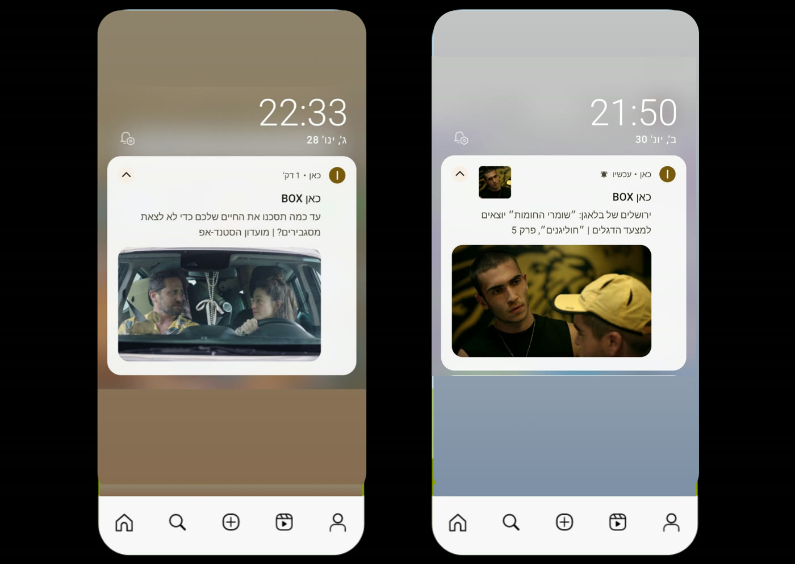
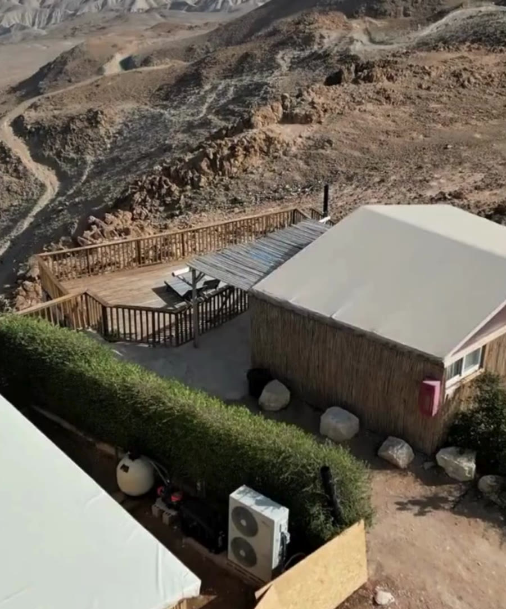
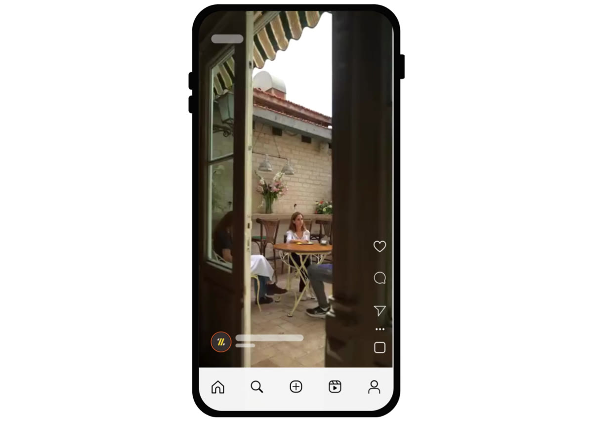
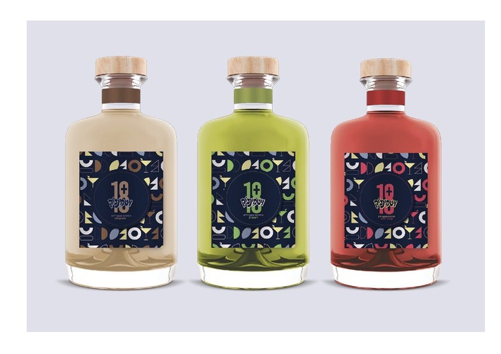

אתם בטוח מכירים את המצב הזה.
קמפיינרים, בעלי עסקים, מנהלי שיווק, סטארטאפיסטים ומפיקים שיודעים שיש להם משהו טוב, ולא יודעים איך להעביר את המסר.
יש בריף, אין כיוון
כולם יודעים שצריך קמפיין. יש תקציב, יש לו"ז. אבל אף אחד בחדר לא יודע מה הרעיון. כל פרילנסר שמגיע מביא את הרעיון הוויראלי שלו, ולא את הסיבה האמיתית שבגללה הקמתם את העסק.
הכל נכתב, שום דבר לא זז
יש תוכן. יש פוסטים. יש סרטונים. אבל כלום לא עובד. הבעיה היא לא הכמות. הבעיה היא שאין רעיון מרכזי שמחזיק את הכל.
יש מוצר טוב, אין שפה
המוצר מצוין. אבל ברגע שצריך להסביר אותו לאנשים, ברגע שצריך סלוגן או קונספט או סרטון, הכל נשמע אותו דבר.
נושא בוער הופך לסרטון דעה שמוכיח את הנקודה.
תסריטים, ויזואל וכותרות שמבוססים על מחקר וקטעי ארכיון.

הבריף היה ״תעשי מזה פוסט״. השאלה האמיתית הייתה אחרת: מאיזו זווית מושכים מישהו שגולל ולא התכוון לקרוא כלום. לא מה חשוב במאמר — הכותב כבר יודע את זה. מה עוצר אצבע. בנוסף: שפה ויזואלית לפוסטים וכתיבת הניוזלטר. 23 פוסטים בתשעה שבועות.

דמות ציבורית בתפקיד פעיל לא צריכה שיבחינו בה. היא צריכה שמה שהיא אומרת יחזיק. זה הופך את השאלה: לא איך עוצרים גלילה, אלא מה בכלל שווה להיאמר מהמקום הזה — ומה לא. למי שיש לו עמדה, משפט בינוני עולה יותר משתיקה. כאן הקריאייטיב לא היה ביצוע של בריף. הוא היה חלק מההחלטה מה הסיפור.
זירה פוליטית, לוח זמנים של חדשות. הנושא מגיע בוער, הטקסט צריך לצאת בזמן שהוא עדיין רלוונטי, וכל מילה עוברת אישור לפני שהיא עולה. מהר, בלי לפספס את הרגע ובלי לחרוג מהקווים.
הבריף מגיע בוער ומבולגן: מישהו אמר משהו, צריך סרטון, המסר צריך להיות כזה. סרטון שלא מחזיק בבדיקה לא סתם נכשל, הוא הופך לנטל. לכן כל טענה נשענת על מה שקרה באמת, מתועד, על המסך. וכשהצופה רואה את זה בעצמו, הוא משתכנע לבד. זה עובד הרבה יותר טוב מלהגיד לו מה לחשוב.

עריכת תוכן — פושים לאפליקציה, כותרות ותקצירים לדיגיטל, באחד מגופי השידור הגדולים בישראל. חומר רגיש שדורש דיוק מוחלט ואימות מול מקור ראשוני. פה טעות אחת היא לא תקלה טכנית, היא פגיעה במשפחות.
יש מוצר טוב. עכשיו צריך את השפה המדויקת.
הפיצוח יוצא מבעיה עסקית אמיתית, לא מבריף מעוצב. כשהבעיה ברורה, הרעיון הוא לא קישוט. הוא הפתרון, וממנו נוצר כל התוכן.
מה שלא תוכנן מראש לא קיים. אין צילום שלא צולם, ואין יום שני. העבודה התחילה יום קודם, על רשימת הרעיונות: מה בכלל שווה את היום ומה יורד. בצילום עצמו — בימוי לפי מה שנכתב.
הפיצוח לא היה לדבר על הבירה אלא על הרגע שבו שותים אותה: הטיול, הפיקניק, מי בחבורה מחליט מה שותים. קונספטים לפוסטים, הטקסטים עצמם, הנחיות ויזואליות לצוות העיצוב, ורעיונות לפעילויות עוקבים ולמהלך גרילה. 19 פוסטים וסרטונים שעלו לאוויר בקיץ 2025.

לפצח את הקונספט, למצוא רפרנסים, לכתוב את התסריט, ללוות את יום הצילום ואת הבימוי, ולהגיע לתוצר מוגמר עם קריאייטיב מדויק.

קונספטים, רילסים ושמות מוצר שיצאו מתוך מה שמסעדנים באמת צריכים, לא מתוך מצגת מותג.
תהליך, לא אלתור.
מה שאנשים קוראים לו ״קופי״ הוא אצלי תהליך. כל פרויקט מתחיל מבעיה ומסתיים בתוצר שמדויק לעסק שלכם.
מסר ברור, לפני הכל
לפני שמתחילים, אנחנו מגדירים ביחד: מה הבעיה, מי קהל היעד, מה התוצר, מה לו"ז. מתחילים רק אחרי שיש בריף ברור.
מחקר לפני כתיבה
כל תסריט וכל פוסט מתחילים ממחקר: קהל, מתחרים, שפה, נתונים. אני בונה עולם תוכן שלם, לא רק תוצרים בודדים.
מה יש בתוך תסריט
מחקר רקע, הוק פתיחה, מבנה דרמטורגי, CTA וכיוון ויזואלי לצלם ולעורך. לא טקסט — תוכנית עבודה שלמה לצוות ההפקה.
הקמה וביסוס, לא ניהול שוטף
אני מקימה ומבססת ערוצי תוכן מאפס: שפה, מבנה, לו"ז, מערכת הפעלה. בתוך פרויקט הליווי נמשך מהתסריט ועד סרטון גמור, כולל ניהול הגרסאות מול העורכים — ונעצר שם, כשהתוצר מוכן להעלאה. כשהכל עומד, אני מעבירה את המושכות ויוצאת. לא מנהלת תפעולית לטווח ארוך.
אמינות ואחריות
כל נתון מאומת מול מקור ראשוני. מה שלא אומת, מסומן במפורש. זכויות תמונות, רישיונות, גילוי נאות. בגוף תקשורת, בארגון פוליטי ובמשרד הפקה, זה לא בונוס. זה ביטוח.
נכנסים עם בעיה. יוצאים עם כיוונים.
פגישה ממוקדת של שעתיים, ויוצאים עם כיוונים ברורים.
- שם למוצר או למותג
- קונספט לקמפיין
- כיוון לסרטון
- אסטרטגיית תוכן
- סלוגן או מסר מרכזי
- פיצוח בעיה יצירתית
אפשר לפנות גם בלי פרויקט הפקה מלא. לפעמים צריך רק את המוח.

מיתוג מלא למותג קוקטיילים: לוגו, פלטת צבעים, פטרן, עיצוב מוצר ואריזה.